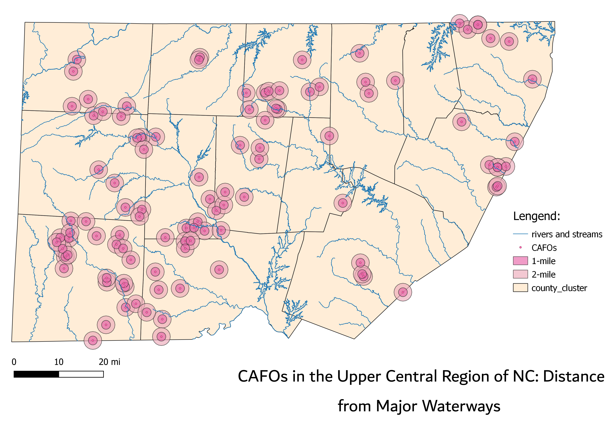

Homework 8: Geoprocessing Analysis
Nea Strawn

The question I hoped to answer with this map is the distance of Concentrated Animal Feeding Operations near Orange and Durham county. CAFOs are a large industry in North Carolina.
Most are concentrated in Eastern NC. However, I wanted to stay more local. The map depicts the distance of registerd CAFOs from major waterways in this county cluster.
The waste produced by CAFOs typically runs off into nearby waterways, even with proper treatment meathods. This can severely impact nearby communities and ecosystems.
Within the 14 counties shown on the map, there are 103 concetrated animal feeding operations. 56 of these are within a two mile range of a stream or river. 27 are within a one mile range from a stream or river.
Method
1. I found shapefiles for North Carolina counties, CAFOs located in NC, and major NC waterways (data sources located below). I then reprojected all data into 6543.
2. I then used the intersection tool on QGIS to create a dataset with selected counties. Those being: Alamance, Caswell, Chatham, Durham, Franklin, Granville, Guildford, Orange, Person, Randolph, Rockingham, Vance, Wake, and Warren.
3. I used the intersection tool again to reduce the CAFO and waterways data within the selected region.
4. From there I created two buffer, 1 mile and 2 miles, around the CAFOs.
Data Sources
NC OneMap: North Carolina Counties
NC OneMap: CAFOs in North Carolina
NC OneMap: Waterways in North Carolina